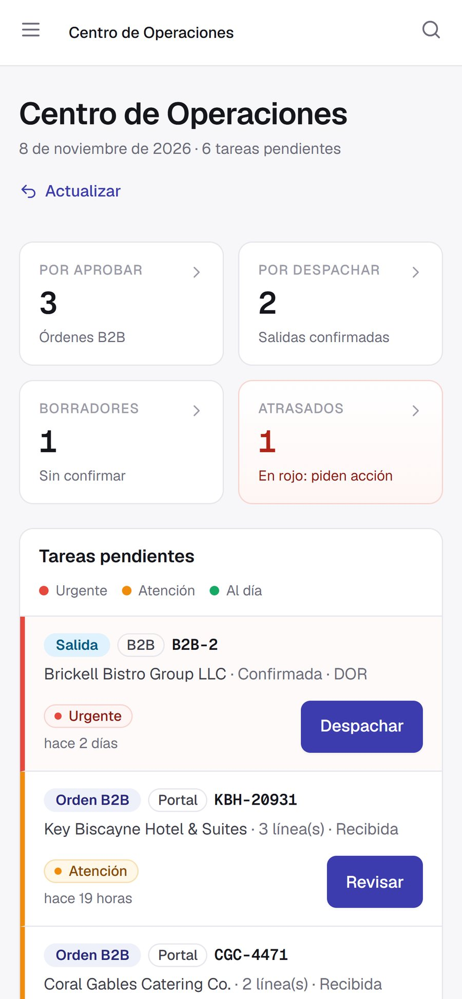
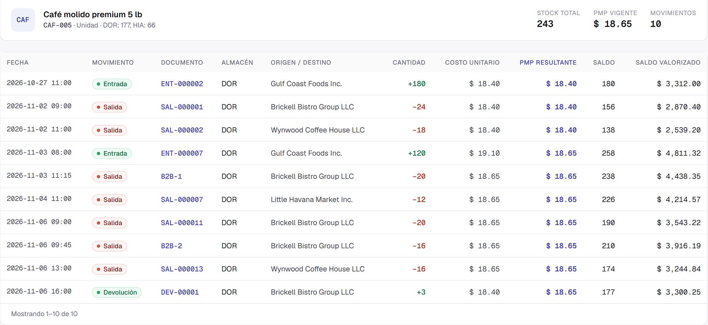
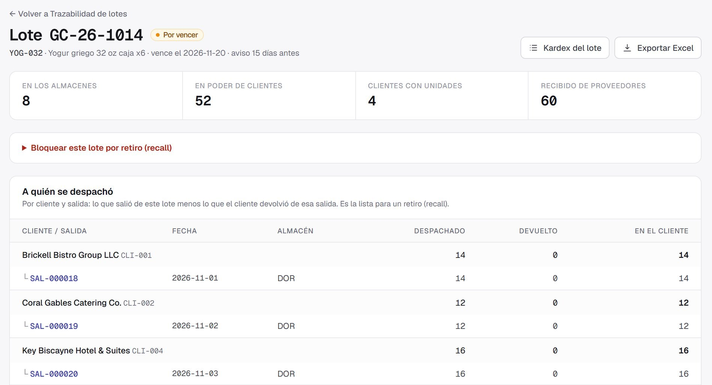
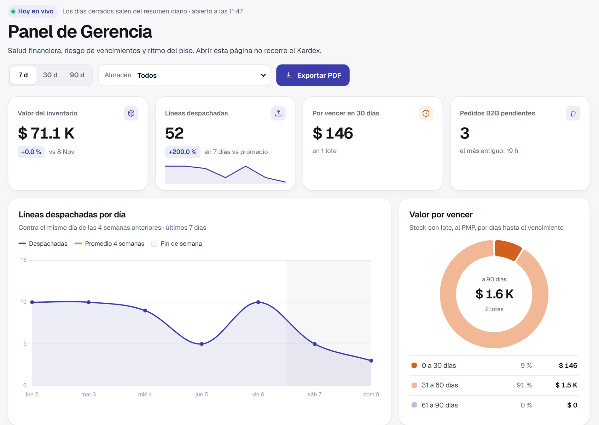
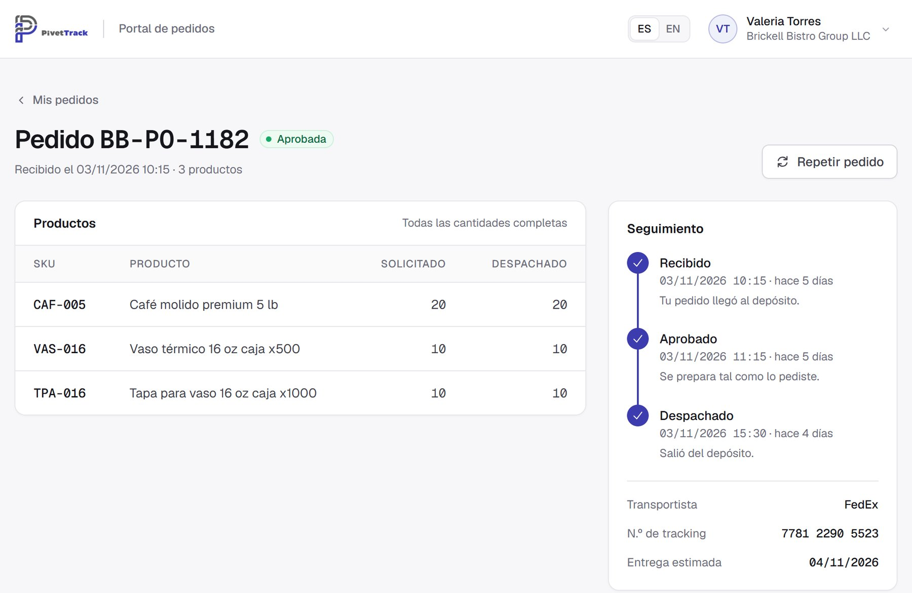

Sepa en minutos qué cliente recibió cada lote.
PivetTrack sigue cada caja desde su muelle hasta su cliente. Como ejemplo, abajo está el recorrido de un lote de yogur, con pantallas reales del sistema. Elegimos alimentos porque es de los rubros que más exigen; en ferretería, perfumería o repuestos es el mismo camino.
El recorrido de un lote
-
Llega al muelle
La oficina carga la factura y el piso declara lotes, vencimientos y cantidades sin ver lo esperado. Si facturaron 120 cajas y se contaron 114, la diferencia la verifica otro administrador y se cierra con nota de crédito, reposición o baja.
-
Se guarda en su pasillo
Al recibir, cada cosa se guarda en su pasillo. El stock se ve por ubicación, cada reubicación deja su movimiento y cada pasillo se recuenta a ciegas.
-
Sale primero lo que vence primero
El operario escanea el producto o su caja (EAN, UPC o ITF) con el celular o una pistola. Un despacho a cliente nunca toma un lote vencido, y saltear el escaneo exige la co-firma de un administrador.

-
Llega solo a su QuickBooks
Cada salida se convierte en Invoice, cada entrada en Bill, cada devolución de cliente en Credit Memo y cada devolución a proveedor en Vendor Credit. La cuenta sigue siendo suya y la administra su contador.
-
Si vuelve, vuelve a su costo
Tiene 200 unidades a un costo promedio de $12.00 y un cliente devuelve 100 que salieron a $10.00. Reingresar al costo del día le dejaría $200 de inventario fantasma. PivetTrack reingresa a $10.00: 300 unidades, $3,400, costo promedio de $11.33.

-
Y si hay un retiro, ya sabe a quién llamar
Un clic y tiene la lista de clientes que recibieron el lote, salida por salida y neta de devoluciones, lista para Excel.
PivetTrack registra la trazabilidad con los datos que carga su equipo y apoya sus procesos de retiro. No sustituye sus obligaciones ante la FDA ni otras normas sanitarias.

Decida con los números de hoy.
Valor del inventario, ritmo de despacho, vencimientos y pedidos pendientes, en un panel y en un informe PDF con folio de auditoría: queda registrado quién lo emitió, cuándo y con qué filtros.


Sus clientes piden en su portal, con su logo.
Sus clientes piden desde el teléfono, con los productos que usted les habilita. También hay una API para conectar otros sistemas. El alcance del portal y de la API se define en la propuesta formal.
Cualquier proveedor dice que su sistema es rápido. Aquí está la medición.
| Prueba | Resultado | Fecha |
|---|---|---|
| 120 operarios haciendo picking a la vez durante 15 minutos, con más de 300,000 salidas en el historial. 4,243 de 4,243 salidas confirmadas y ningún error de servidor en 46,904 peticiones. | 293 ms p95: 95 de cada 100 respuestas, o menosDe un máximo de 0.5 s por contrato, con condiciones |
3 nov 2026 |
| 240 operarios, el techo de un despliegue estándar y ya con cola. Sin errores. Entre 120 y 240 los tiempos varían de una corrida a otra, y por eso no los garantizamos. | 1.56 s p95 |
1 nov 2026 |
| Cierre de una toma general de 167,382 líneas mientras 20 operarios seguían despachando. Ni un pedido falló de 6,176. | 229 s En un solo intento |
29 oct 2026 |
Corridas únicas en un entorno de pruebas clonado de producción, sin usuarios reales. Es un rango, no una cifra fija: el peor minuto de la corrida del 3 de noviembre llegó a 636 ms. Por contrato: hasta 120 usuarios simultáneos y p95 de hasta 0.5 s en picking, con condiciones.
Véalo funcionando
Una instancia exclusiva para su empresa.
PivetTrack es single-tenant: una aplicación y una base de datos solo para usted. Sus datos no conviven con los de nadie y su rendimiento no depende del vecino.
Registros que no se reescriben
Nadie, en ningún rol, puede editar o borrar un movimiento del Kardex.
Doble factor (2FA)
Obligatorio para los administradores, con códigos de respaldo.
Auditoría completa
Quién hizo qué y cuándo: cada documento, cada cambio de costo y cada informe.
Respaldos gestionados
PostgreSQL administrado, con respaldo automático diario y restauración.
99.9% de disponibilidad
Por contrato (SLA), con créditos de servicio a su favor si no se cumple.
Dos números. Todo sobre la mesa.
Tenga 8 o 25 usuarios, 5,000 o 150,000 SKU, el precio es el mismo. Incluye la instancia en la nube y el acceso de todo su equipo.
Implementación, pago único
- En marcha en 2 a 3 semanas
- Instancia dedicada y aislada en la nube
- Su logo y su marca en la interfaz y en todos los comprobantes PDF
- Carga asistida de su catálogo desde Excel o su ERP, sin tope de SKU
- Dos capacitaciones virtuales de 2 horas
- Configuración de QuickBooks Online con su contador
Plan Estándar
- Usuarios ilimitados, sin cargo por asiento
- Todos los módulos del depósito, con lotes, FEFO y retiros
- Importaciones y cierres masivos en segundo plano, sin tope de SKU
- Hasta 120 usuarios simultáneos; p95 de hasta 0.5 s en picking, con condiciones (SOW, Anexo C)
- Soporte según el SLA, con atención 24/7 para incidentes críticos
- Respaldos automáticos y actualizaciones
- QuickBooks Online, operado por nosotros
| Crítico | 1 hora, 24/7 | Caída total o pérdida de datos |
|---|---|---|
| Alto | 4 horas hábiles | Función esencial caída, sin alternativa |
| Medio | 1 día hábil | Un error con alternativa disponible |
| Bajo | 2 días hábiles | Consultas y solicitudes de mejora |
Se cotiza aparte: Portal B2B y API, desarrollos a medida, integraciones con otros sistemas (QuickBooks Desktop u otro ERP), una segunda fuente de datos y la depuración de sus datos. Plan Enterprise: para varios procesos masivos a la vez o informes pesados de forma rutinaria; se implementa y se cotiza a medida. Precios en dólares, sin impuestos. A octubre de 2026, la suscripción no está gravada con el Sales Tax de Florida. Las condiciones finales se fijan en el SOW y el SLA.
Antes de cambiar de sistema, conviene preguntar esto.
Si su duda no está aquí, la vemos en la sesión de diagnóstico.
¿Sirve si no vendo alimentos?
Sí. Cada producto se configura por separado: con lote, con lote y vencimiento, o sin ninguno de los dos. Así funciona para ferretería, perfumería o repuestos. Hoy no lleva número de serie unidad por unidad ni compatibilidad por vehículo; si su operación los necesita, lo vemos en la sesión de diagnóstico.
¿Cuánto tarda la puesta en marcha?
Son 2 a 3 semanas. Nosotros cargamos su catálogo desde un Excel o una exportación de su sistema, y su equipo recibe dos capacitaciones de 2 horas.
Ya tengo QuickBooks. ¿Para qué necesito esto?
QuickBooks lleva la contabilidad, pero no sabe qué lote está en qué estante ni a quién se lo despachó. PivetTrack lleva el piso y le envía a QuickBooks lo que ya pasó, sin doble carga. La integración con QuickBooks Online está incluida. Si usa Desktop, PivetTrack funciona igual sin integración, y conectarlo se cotiza aparte.
¿Quién toca mi contabilidad?
Nadie de nuestro lado. En la implementación conectamos su empresa y elegimos las cuentas con su contador. Después, PivetTrack sólo crea documentos nuevos y nunca modifica ni borra lo que ya está en QuickBooks.
¿Aguanta mi volumen?
Lo medimos: con 165,382 SKU, una toma general de 167,382 líneas se cerró en 229 segundos mientras 20 operarios seguían despachando, y ningún pedido falló de 6,176. Son corridas en un entorno de prueba, no una garantía. Su SLA es el del contrato.
Si distribuyo alimentos, ¿cómo ayuda con FSMA 204?
PivetTrack registra el lote, el vencimiento y el destino de cada movimiento, y arma la lista de un retiro en un clic. Eso apoya sus procesos de trazabilidad. Cumplir la norma sigue siendo responsabilidad de su empresa, y no se lo vamos a prometer.
¿Y si después quiero irme?
Durante el contrato puede exportar a Excel cuando quiera: Stock Actual, Kardex, próximos a vencer, trazabilidad de un lote y el comprobante de la Toma. Al terminar, si está al día con los pagos, sus datos siguen disponibles para exportar durante 30 días. Lo que ya está en QuickBooks queda en su QuickBooks.
¿Mis datos están seguros?
Su empresa tiene su propia instancia y su propia base de datos, que no comparte con nadie, con doble factor para los administradores, respaldos diarios y un compromiso de disponibilidad del 99.9% por contrato.
Tres pasos para que su bodega responda por cada lote.
Sesión de diagnóstico
45 minutos sobre su operación real, con acuerdo de confidencialidad. Le mostramos con números dónde pierde dinero hoy.
Propuesta formal
Alcance de Trabajo (SOW) y Acuerdo de Nivel de Servicio (SLA), por escrito y antes de empezar.
En marcha con su marca
En 2 a 3 semanas: su catálogo cargado, con el costo de cada producto, y su equipo capacitado.